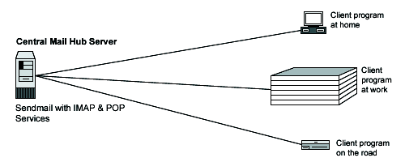

23.1. Configure and Compile
With IMAP & POP software, a remote client email program can access message stores on the Linux mail server as if they were local. For example, email received and stored on an IMAP server for a user can be manipulated from his/her computer at home, office, etc, without the need to transfer messages or files back and forth between these computers.
POP stands for Post Office Protocol and simply allows you to list messages, retrieve them, and delete them. IMAP is POP on steroids. It allows you to easily maintain multiple accounts, have multiple people access one account, leave mail on the server, just download the headers, or bodies, no attachments, and so on. IMAP is ideal for anyone on the go, or with serious email needs. The default POP and IMAP servers that most distributions ship fulfill most needs.

These installation instructions assume:
Commands are Unix-compatible.
The source path is /var/tmp -other paths are possible.
Installations were tested on Red Hat Linux 6.1 and 6.2.
All steps in the installation will happen in super-user account root.
IMAP version number is 4.7c
These are the Package(s) needed and should be available here:
| IMAP/POP Homepage: http://www.washington.edu/imap/ |
| IMAP/POP FTP Site: 140.142.3.227 or 140.142.4.227 |
| You must be sure to download: imap.tar.Z |
: These are a few Prerequisites you have to keep in mind, sendmail server should be already installed on your system to be able to use IMAP & POP software. For more information on the required software, see the related chapters in this book.
You need to decompress the tarballs to compile, so it is a good idea to make a list of files on the system before you install Imap, and one afterwards, and then compare them using diff to find out what file it placed where. Simply run find /* > Imap1 before and find /* > Imap2 after you install the software, and use diff Imap1 Imap2 > Imap-Installed to get a list of what changed.
Before Compilation you need to decompress the tarball (tar.Z).:
[root@deep] /# cp imap.tar.Z /var/tmp
[root@deep] /# cd /var/tmp
[root@deep ]/tmp# tar xzpf imap.tar.Z
|
Optimize before you Compile, move into the new IMAP/POP directory and edit the Makefile file vi src/osdep/unix/Makefile and change these lines:
To read:sh -c '(test -f /usr/include/sys/statvfs.h -a $(OS) != sc5 -a $(OS) != sco) && $(LN) flocksun.c flockbsd.c || $(LN) flocksv4.c flockbsd.c'
This modification will change the sys/stavfs file. This file, with the new glibc 2.1 of Linux, is different from what is available on Sun.sh -c '(test -f /usr/include/sys/statvfs.h -a $(OS) != sc5 -a $(OS) != sco -a $(OS) != lnx) && $(LN) flocksun.c flockbsd.c || $(LN) flocksv4.c flockbsd.c'
To read:BASECFLAGS="-g -fno-omit-frame-pointer -O6 -DNFSKLUDGE" \
These are our optimization flags for the compilation of IMAP/POP software on the server.BASECFLAGS="-g -fno-omit-frame-pointer -O9 -funroll-loops -ffast-math -malign-double -mcpu=pentiumpro -march=pentiumpro -fomit-frame-pointer -fno-exceptions -DNFSKLUDGE" \
To read:ACTIVEFILE=/usr/lib/news/activeACTIVEFILE=/var/lib/news/active
To read:SPOOLDIR=/usr/spoolSPOOLDIR=/var/spool
To read:RSHPATH=/usr/ucb/rshRSHPATH=/usr/bin/rsh
To read:LOCKPGM=/etc/mlock
The ACTIVEFILE= line specifies the path of the active directory for IMAP/POP, the SPOOLDIR= is where we put the spool directory of Linux IMAP/POP, and the RSHPATH= specify the path of rsh directory on our system. It's important to note that we don't use rsh services on our server, but even so, we specify the right directory to rsh.#LOCKPGM=/etc/mlock
To read:CC=cc
This line represents the name of our GCC compiler we will use to compile IMAP/POP software, in our case, egcs).CC=egcs
Now, we must compile and install IMAP & POP on the Mail Server:
[root@deep ]/imap-4.7c# make lnp
[root@deep ]/imap-4.7c# install -m 644 ./src/ipopd/ipopd.8c /usr/man/man8/ipopd.8c
[root@deep ]/imap-4.7c# install -m 644 ./src/imapd/imapd.8c /usr/man/man8/imapd.8c
[root@deep ]/imap-4.7c# install -s -m 755 ./ipopd/ipop2d /usr/sbin
[root@deep ]/imap-4.7c# install -s -m 755 ./ipopd/ipop3d /usr/sbin
[root@deep ]/imap-4.7c# install -s -m 755 ./imapd/imapd /usr/sbin
[root@deep ]/imap-4.7c# install -m 644 ./c-client/c-client.a /usr/lib
[root@deep ]/imap-4.7c# ln -fs /usr/lib/c-client.a /usr/lib/libimap.a
[root@deep ]/imap-4.7c# mkdir -p /usr/include/imap
[root@deep ]/imap-4.7c# install -m 644 ./c-client/*.h /usr/include/imap
[root@deep ]/imap-4.7c# install -m 644 ./src/osdep/tops-20/shortsym.h /usr/include/imap
[root@deep ]/imap-4.7c# chown root.mail /usr/sbin/ipop2d
[root@deep ]/imap-4.7c# chown root.mail /usr/sbin/ipop3d
[root@deep ]/imap-4.7c# chown root.mail /usr/sbin/imapd
|
The above commands will configure the software to ensure your system has the necessary functionality and libraries to successfully compile the package, compile all source files into executable binaries, and then install the binaries and any supporting files into the appropriate locations.
Note that the make lnp command above will configure your Linux system with Pluggable Authentication Modules -PAM capability for better security.
The mkdir command will create a new directory named imap under /usr/include. This new directory imap will keep all header files related to the imapd program c-client/*, and shortsym.h files.
The chown command will change the ownership of the binary programs ipop2d, ipop3d, and imapd to be owned by the super-user root, be group owner by the user mail.
The ln -fs command would create a symbolic link from c-client.a file to libimap.a link which may be require by some third party program you may install in the future.
: For security reasons, if you use only imapd services, remove the ipop2d and ipop3d binaries from your mail server. The same applies for ipopd; if you use only ipopd services, remove the imapd binary from your mail server. If you intend to use imapd and ipopd services then keep both binaries.
Please do cleanup later:
[root@deep] /# cd /var/tmp
[root@deep ]/tmp# rm -rf imap-version/ imap.tar.Z
|